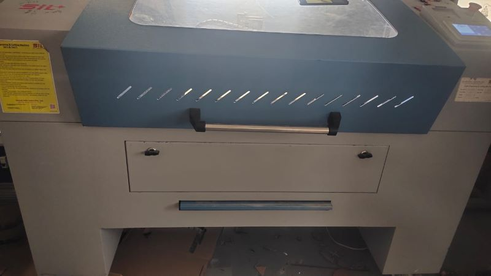
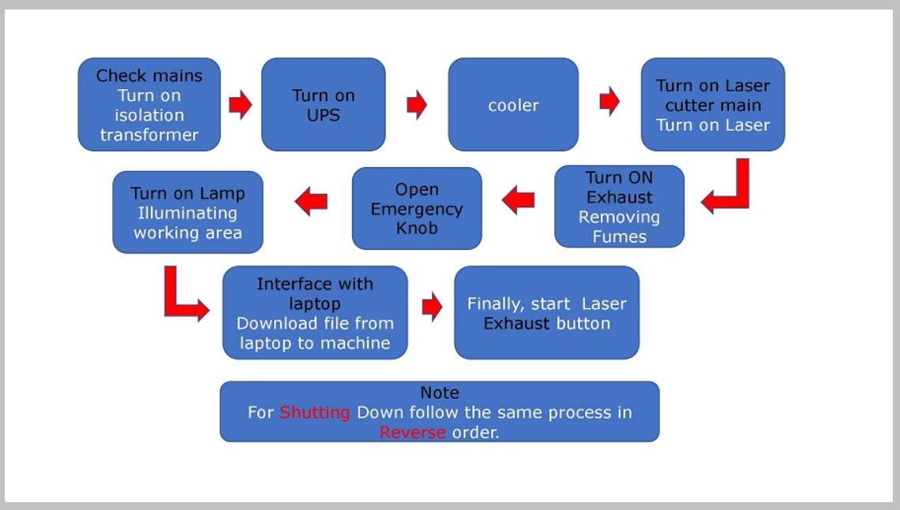
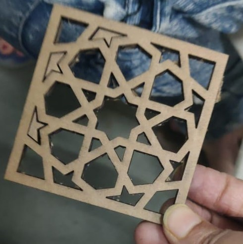
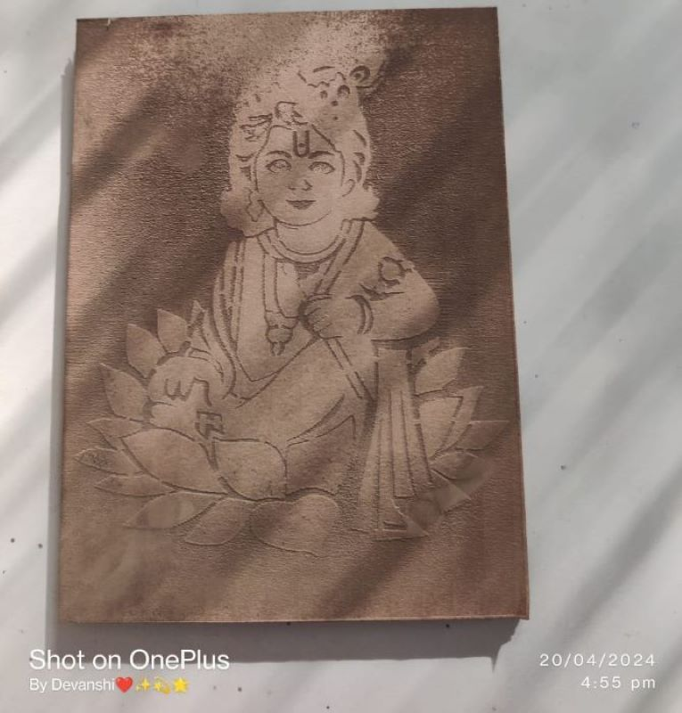
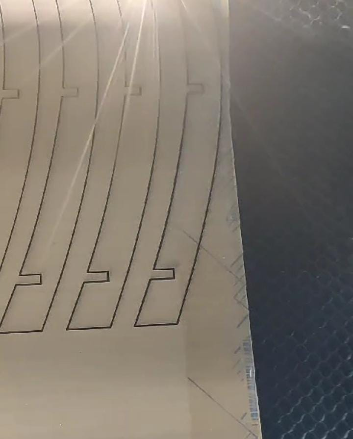
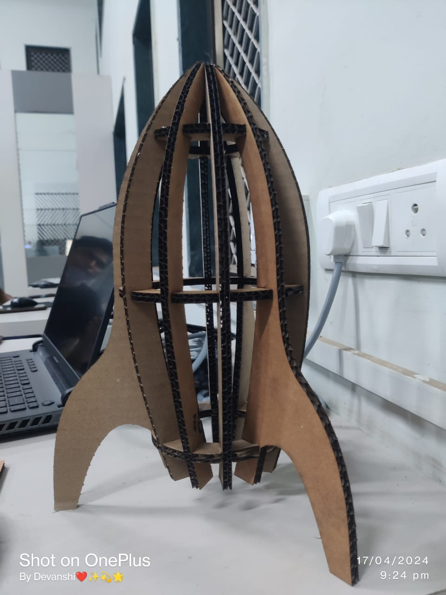

SIL Laser Engraving - Cutting Machine

Weight :- 250 kg
Size :- 600-height 900- width
Features:
• High cutting precision and positional accuracy
• Improved edge quality and surface finish
• Higher repeatability
• Advanced laser tools for material processing applications
• Drilling and engraving in addition to cutting
• Negligible work piece degradation
• Cost-effectiveness
• Minimal thermal stress zone
• Shapes High Speed belt drive plotting unit with precise micro stepping drives
• Red beam pointer
• Z- Axis (Optional)






